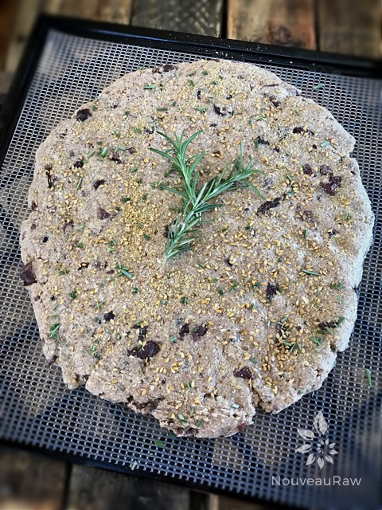
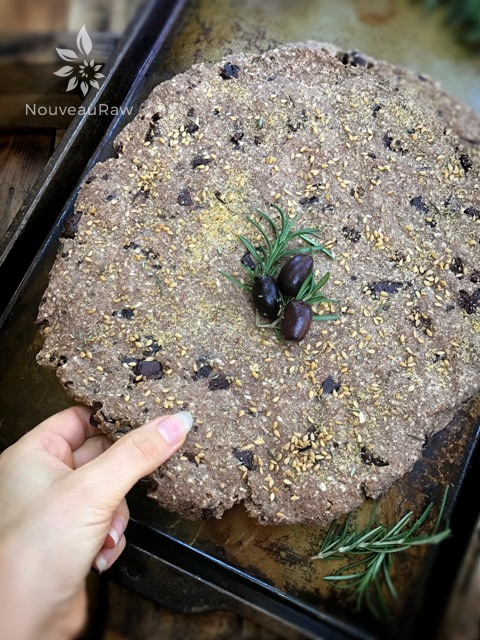
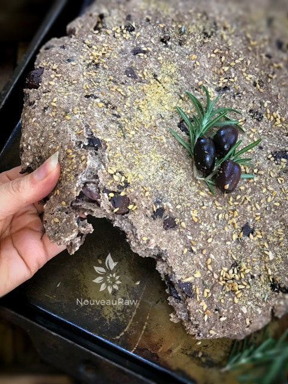
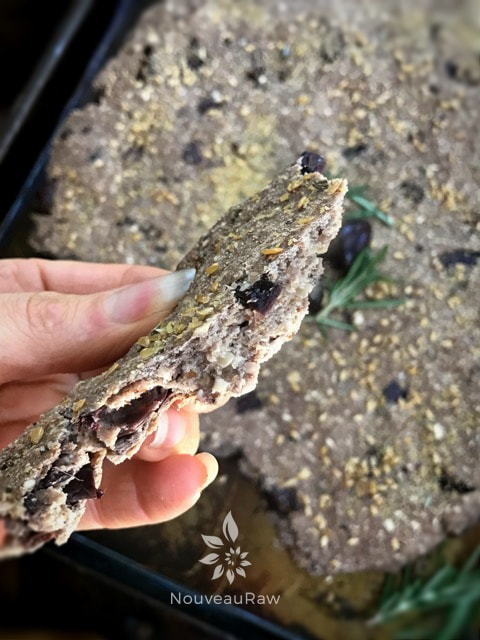

Kalamata Olive and Rosemary Focaccia

~ raw, vegan, gluten-free ~
This savory Italian bread is a rustic focaccia recipe with a rich olive and rosemary flavor. It is a versatile addition to your repertoire of recipes.
You can serve it alongside soups, salads, or frittatas or as an accompaniment to a vegan cheese platter. Or, you can top it with slices of tomato and sliced avocado for an easy open-faced sandwich.
I first made this bread back in 2011. Each time I make it, I make some slight changes and now felt it was time to update this recipe. The ingredients stayed the same except I added rosemary, which complemented the other flavors. But what I did discover was how to increase the aesthetics of this bread.
Initially, when I first designed this recipe, I mixed everything in the food processor, which created a rose hue to the bread, which was borderline unattractive. So, now, when I make it, I combine everything by hand in a bowl, making sure to add the olives last to prevent the bread from turning rose/pink color.
I also changed the shape from a loaf to focaccia (foh-KAH-chee-uh) because the ingredients fit well with that style of bread. Focaccia is an Italian flatbread that resembles a pizza crust without the topping.
I use to bake a gluten-free version of this bread. I use to take the pan straight from the oven, right to the table… placing it in the center where everyone would reach in and tear off a chunk to enjoy with their meal. I wanted to recreate that with a raw version.
This recipe has a pleasant lingering taste of garlic, so if you are sensitive to garlic, you might want to decrease the measurement to maybe two teaspoons. If you use raw garlic, be careful because the raw version of garlic is VERY pungent.
It would be well served as a vessel for a raw nut cheese for sure, but I have to admit that it carries its own weight beautifully and tastes amazing all by itself.
- 2 cups packed, moist almond pulp
- 1 cup rolled, gluten-free, oats, soaked & dehydrated
- 1/4 cup ground flax seeds
- 3 Tbsp raw coconut flour
- 2 Tbsp garlic powder
- 1 Tbsp fresh minced rosemary
- 1 tsp Himalayan pink salt
- 1/2 cup Irish moss gel (more options below)
- 1/4 cup date paste
- 1 Tbsp lemon juice
- 1 cup kalamata or Botija black olives, diced
Preparation:
- Place the oats in the food processor, fitted with the “S” blade, processing until it reaches a fine flour consistency.
- Add the ground flax seeds, coconut flour, garlic powder, and salt. Pulse till mixed and place in a large mixing bowl.
- Add almond pulp, Irish moss, date paste, and lemon juice. Mix with your hands until everything is well incorporated.
- In place of Irish moss, you can use 1/2 cup of Kelp paste or 1/4 psyllium husks + 1 1/2 cups of water.
- Add olives and gently fold in.
- Depending on how moist your almond pulp is, you may need to add water, so the dough sticks together nicely. If you do, do this by adding 1 Tbsp at a time.
- Remove the batter and shape it into the desired size. I created a flatbread (focaccia)
- Optional: sprinkle ground and whole flax seeds on top along with some minced fresh rosemary.
- Place bread on the mesh sheet that comes with your dehydrator and dehydrates at 145 degrees for 1 hour. This will create a crust on the outside.
- If creating a loaf, remove it from the dehydrator and slice your bread pieces to the desired thickness.
- I did mine at about 1″. Return to mesh sheet laying the pieces flat.
- Decrease the temperature to 115 degrees (F) and continue to dehydrate for 4-10 hours.
- As an indicator, if it is dry enough, touch the center of the bread slices.
- You don’t want it to be doughy, but you also don’t want the bread to dry out too much.
- Shelf life and storage: My recommendation would be to store this bread in an air-tight container, in the fridge, for 3-5 days.
- The more moisture that is left in your bread, the shorter the shelf life. Therefore, shelf life will vary with your drying technique. Whenever I make this bread, it never lasts very long enough to spoil. Keep in mind, the whole purpose of eating a raw diet is to eat foods at their peak of freshness, so don’t expect this bread to have an extended expiration date.
- Freeze for 1-3 months.
The Institute of Culinary Ingredients™
- What is Himalayan pink salt, and does it matter? Click (here) to read more about it.
- Are oats gluten-free? Yes, read more about that (here).
- Are oats raw? Yes, they can be found. Click (here) to learn more.
- Do I need to soak and dehydrate oats? Not required but recommended. Click (here) to see why.
- Learn how to grind your own flaxseeds for ultimate freshness and nutrition. Click (here).
Culinary Explanations:
- Why do I start the dehydrator at 145 degrees (F)? Click (here) to learn the reason behind this.
- When working with fresh ingredients, it is essential to taste test as you build a recipe. Learn why (here).
- Don’t own a dehydrator? Learn how to use your oven (here). I do, however honestly believe that it is a worthwhile investment. Click (here) to learn what I use.
-

-
Ready for the dehydrator.
-

-
As you can see it darkened a little during the drying process.
-

-
I am trying to show you the bread-like texture that it has when you tear a piece off.
-

-
Look at that amazing bread-like texture!
© AmieSue.com